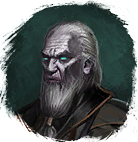

Открыть в интерактивной вики →
| Уровень | 26 |
|---|---|
| Сила (PvE) | 1066 |
| Аспект арены | Solnai |
| Здоровье | 2500 |
| Мана | 4000 |
| Выносливость | 2000 |
Локация
Путь

Тень
Аспект

Solnai
Вариант 2: Путь
Тень
Вариант 2: Аспект
Solnai
Умения
- Буря — молния теневой удар
- Теневая аура — удар в живот отупление булавка в глаз явление смерти укол куклы отравление
Иммунитеты / особые умения
Устойчивость перед лицом смерти
Дроп
| Рары | Синергетики | Эпики | |||
 Рары для питомцев Рары для питомцев Рары для питомцев Рары для питомцев Рары для питомцев Рары для питомцев Рары для питомцев Рары для питомцев Рары для питомцев Рары для питомцев Рары для питомцев Рары для питомцев | 20-40 ур. |  | |||
| Прочее: - | |||||
Вариант 2: Умения
- Буря — молния теневой удар
- Теневая аура — удар в живот отупление булавка в глаз явление смерти укол куклы отравление
Вариант 2: Иммунитеты / особые умения
Устойчивость перед лицом смерти
Вариант 2: Дроп
| Рары | Синергетики | Эпики | |||
| Рары для питомцевРары для питомцевРары для питомцевРары для питомцевРары для питомцевРары для питомцев | 20-40 ур. | | |||
| Прочее: - | |||||